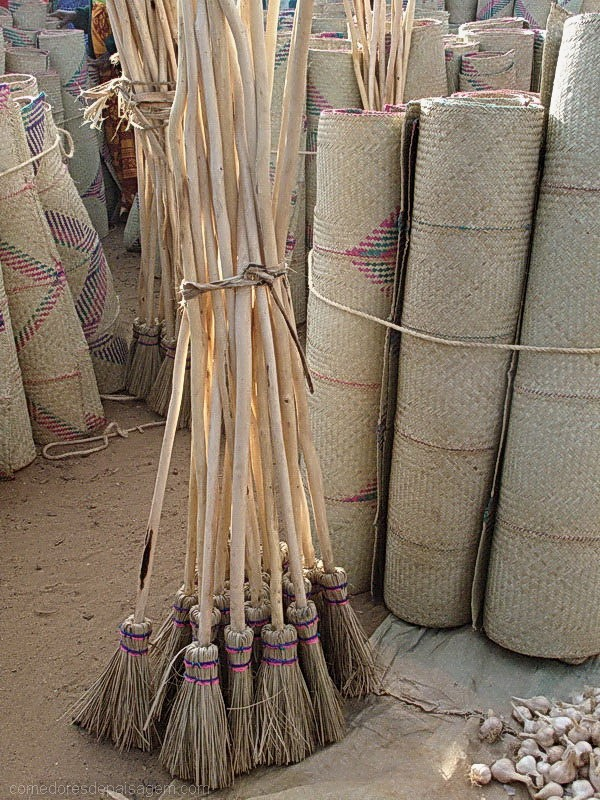
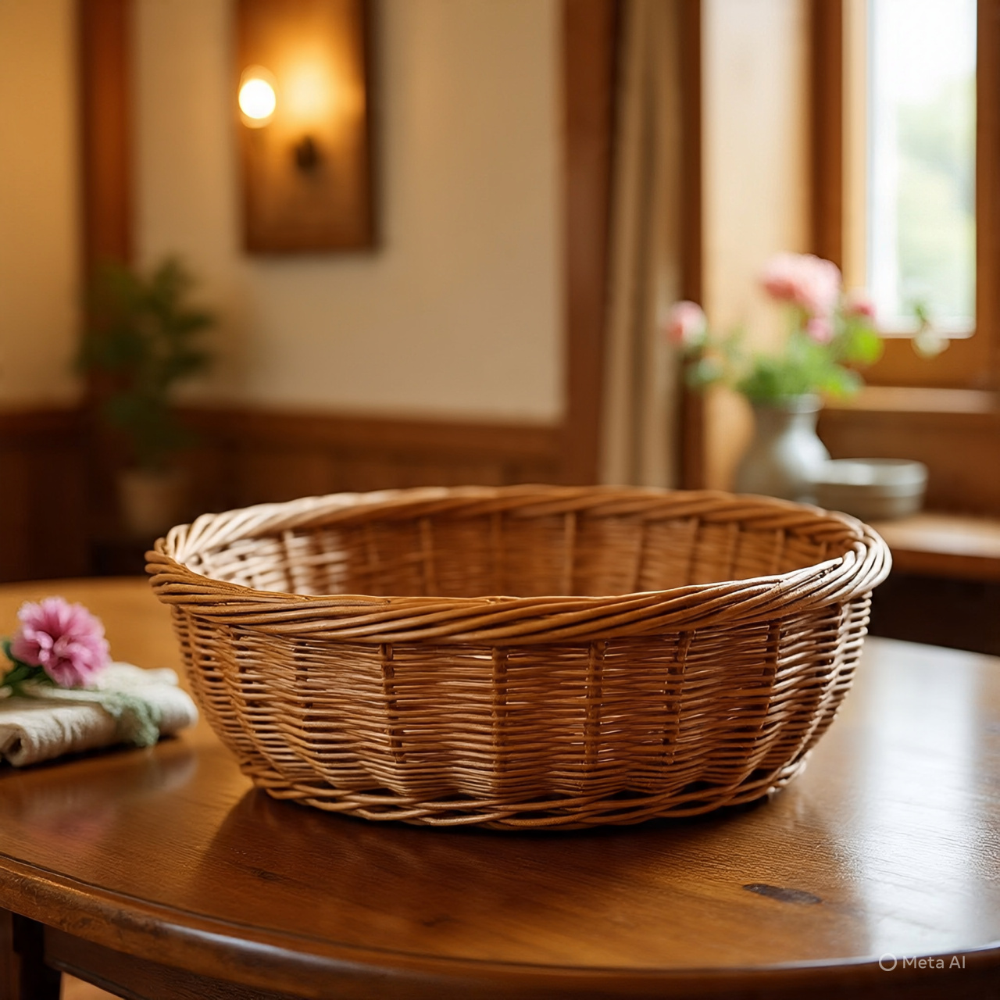
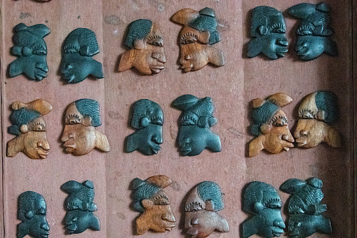
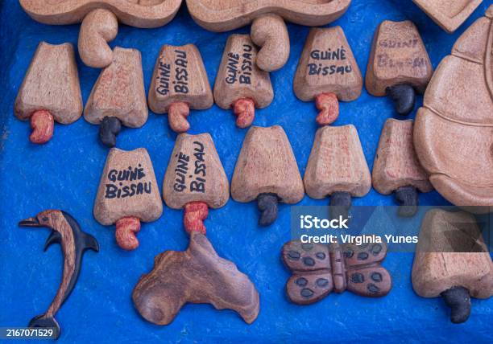

Galeria de Artesanato
Explore trabalhos de artesãos da Guiné-Bissau: cestaria, tecelagem, escultura e muito mais. Clique nas imagens para ampliar e descobrir histórias por trás de cada peça.
Cestaria e trançado
Técnicas ancestrais com palha e fibras locais. Cada cesta é única, feita à mão por artesãos como Madu Baldé.


Tecelagem e tinturas naturais
Trabalhos em algodão e fibras locais, com cores extraídas de plantas da região. Aminata Djau lidera essa tradição.


Escultura em madeira
Peças cerimoniais e decorativas em madeira local. José Camará é mestre dessa arte, preservando saberes ancestrais.

